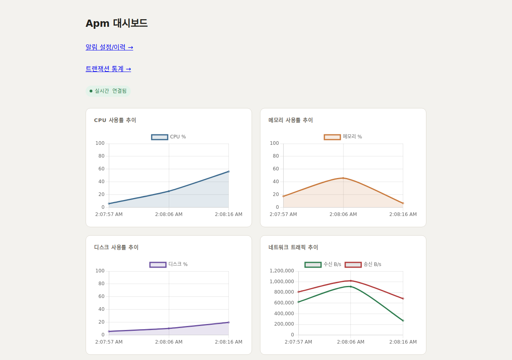
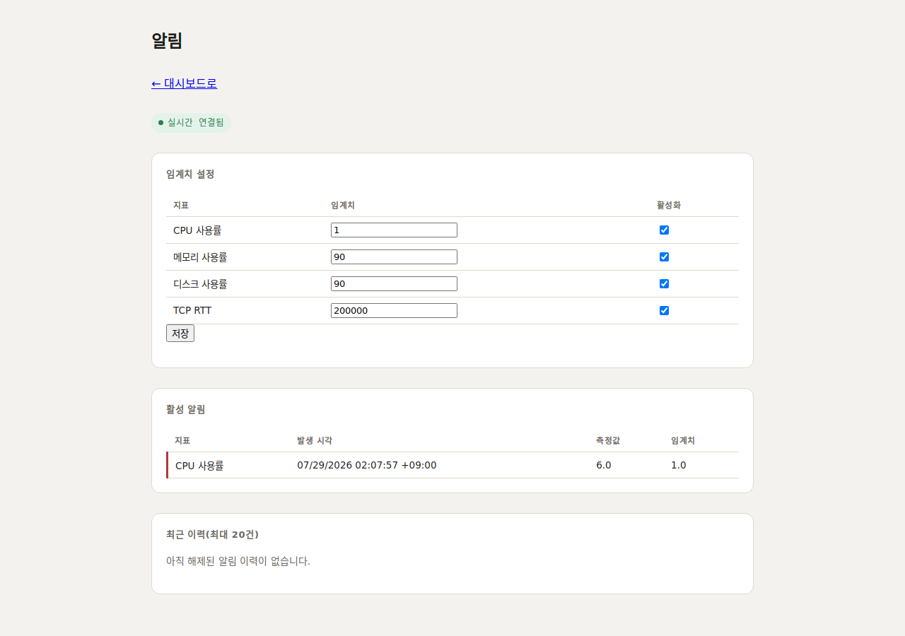
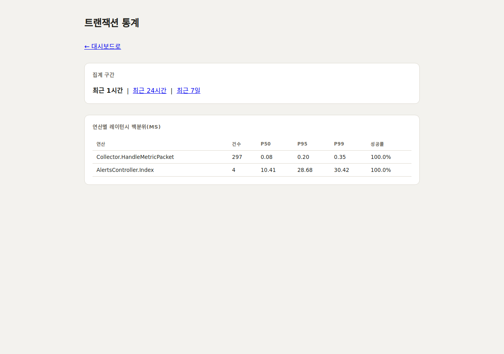
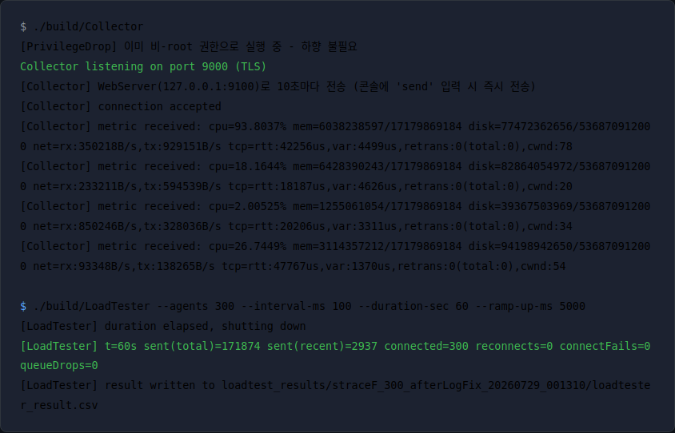

기존 IOCP 기반 TCP 서버 경험을 Standalone Asio로 재구성한 크로스플랫폼 네트워크 코어 위에, TLS·페이로드 이중 암호화(AES-256-GCM)·메시지 프레이밍·타입 안전 직렬화를 갖춘 수집 에이전트와, .NET 8 플러그인 아키텍처 기반 실시간 대시보드까지 1인 설계·구현.
Agent → Collector(로컬 저장) → APM_Console(웹 대시보드)까지 3개 프로세스, 구간별 별도 키를 쓰는 2개의 AES-256-GCM 암호화 구간.
IPayloadSealer 인터페이스로 추상화되어 있어 세션은 암호 방식을 모르고, 키는 구간별로 분리되어 있다.
ResourceCollector(C++, Linux)가 /proc 파일시스템·소켓 옵션을 직접 파싱해서 지표를 만든다 — 라이브러리 뒤에 숨지 않고 계산 방식 하나하나를 직접 결정했다.
| 지표 | 소스 | 핵심 포인트 |
|---|---|---|
| CPU 사용률 | /proc/stat |
부팅 이후 누적 jiffies라 한 시점 값만으론 의미 없음 — 두 샘플 사이의 델타로 계산. iowait도 idle에 합산(표준 관례). |
| 메모리 사용량 | /proc/meminfo |
MemFree가 아니라 MemAvailable 사용 — 아래 상세 참고. |
| 네트워크 대역폭 | /proc/net/dev |
인터페이스별 누적 바이트를 델타 계산, steady_clock으로 실제 경과시간 측정(고정 주기 가정 안 함). lo(루프백)는 제외. |
| TCP 연결 품질 | getsockopt(TCP_INFO) |
RTT/재전송/혼잡윈도우를 애플리케이션이 재측정하지 않고 커널이 이미 추적 중인 값을 그대로 조회 — 아래 상세 참고. |
| 디스크 사용량 | statvfs() |
POSIX 표준 함수로 블록 수×블록 크기를 바이트로 환산. |
MemFree(완전 여유분)만 보면 "메모리가 거의 다 찼다"는 착시가 생긴다.
MemAvailable은 캐시처럼 필요시 즉시 회수 가능한 부분까지 커널이 직접 계산해 제공하는 값 — 실제 체감 여유 메모리에 훨씬 가깝다.
getsockopt(fd, IPPROTO_TCP, TCP_INFO, ...)로 그 값을 그대로 읽어오면 되는데,
애플리케이션이 별도로 재측정하면 정확도는 떨어지고 오버헤드만 늘어난다. TLS 아래 순수 TCP 계층 정보라 암호화 여부와 무관하게 조회 가능.
Collector+Console을 함께 띄우고 실 트래픽을 흘려 직접 촬영(2026-07-29) — 4개 화면 전부 실제 데이터.




각 선택의 이유 — "왜 이렇게 만들었는가".
ldd로 libpq 미링크 실측 확인 — Postgres 미설치 환경에서도 빌드+실행 가능. 같은 문제를 .NET(APM_Console)은 두 프로바이더를 다 참조해도 빌드에 지장이 없어 런타임 선택으로 단순화 — 언어별 컴파일 모델 차이를 반영한 의도적 비대칭.
IDomainModule 등)은 재로딩하지 않고 그대로 재사용하도록 처리 — 같은 이름의 타입도 ALC가 다르면 별개 타입으로 취급되는, .NET 플러그인 아키텍처의 잘 알려진 함정을 피함.
ResourceCollector(/proc 기반)·TCP 지표 조회(TCP_INFO)를 Windows에서 빌드하니 컴파일조차 안 됐고, 다 고쳐서 빌드에 성공한 뒤에도 실행 시 원인 불명으로 멈췄다.
x64-windows-static 트리플릿으로 재구성 — Collector.exe/Agent.exe가 외부 DLL 0개로 완전 정적 빌드되어 SAC 차단을 코드 변경 없이 우회. TLS+AES-GCM 통신·실측 리소스 수집·SQLite 저장까지 전체 파이프라인을 Windows에서 실제 실행으로 재검증.
MetricsReceiverService의 private 로직은 인스턴스 필드 의존을 없애 파라미터 받는 static 메서드로 리팩터링(테스트 가능한 설계는 저절로 안 되고 의도적으로 만들어야 함).
asio::post()로 io_context 스레드에 위임 — 공유 상태(전송 큐 등)를 항상 단일 스레드에서만 건드리게 되어 락 자체가 불필요해지는 설계.
시스템 리소스만 재는 걸 넘어, 운영 중 실제로 쓰는 4가지 기능을 순서대로 추가.
AlertEvaluator)로 분리해 단위테스트 대상으로 삼음. 이번 세션에 실제로 CPU 임계치를 실 트래픽보다 낮게 걸어, 알림이 열리고 화면에 렌더링되는 것까지 end-to-end로 재현·확인.
add_retention_policy()로 청크째 드롭(거의 공짜), SQLite는 직접 DELETE+점진적 vacuum, Console(EF Core)은 백엔드 무관하게 ExecuteDeleteAsync 하나로 통일 — 저장소별 실제 구현은 다르게, 호출부는 똑같이.
IAsyncDisposable로 같은 발상의 RAII API. Collector는 이미 있는 메트릭 전송 파이프라인을 그대로 재사용(새 포트 불필요), Console은 이미 자기 DB가 있어 네트워크 왕복 없이 직접 저장.
PERCENTILE_CONT 같은 SQL 백분위 함수가 없다 — 백엔드마다 로직이 갈리게 둘 순 없었다.
numpy.percentile 기본값과 동일한 정의) — 어느 백엔드든 완전히 같은 코드 경로.
자체 제작 LoadTester(실제 Agent와 같은 코드 경로로 in-process 다중 연결 시뮬레이션)로 매 라운드 재측정 — "고쳤다"고 끝내지 않고 다시 재는 것 자체가 이 과정의 핵심.
strace -c로 원인 추적 — fdatasync/pwrite64가 syscall 시간의 70% 이상. SQLite 기본 저널링이 메트릭 1건마다 동기 flush를 걸고, 이게 네트워크 I/O와 같은 단일 이벤트 루프 스레드를 블로킹하고 있었다.
JobQueue)을 재사용했더니 재실측 중 10초 만에 반복 크래시 — 크로스 스레드로 쓰인 적이 한 번도 없어 드러나지 않았던 락 버그였다. 그 코드는 "여러 프로젝트에서 검증된 코드"라 손대지 않고, std::mutex/condition_variable만 쓰는 훨씬 작은 전용 큐로 교체.
strace -c는 새로 생긴 워커 스레드를 추적하지 않는다 — "fdatasync가 안 보인다"를 "문제가 없어졌다"로 오독할 뻔했다. -f로 다시 재보니 같은 비용이 그대로 남아있었고(전체 syscall 시간의 25%), 그제서야 WAL 도입을 결정.
std::cout << ... << std::endl(메트릭마다 강제 flush)이 write syscall 92%로 새 1위가 됨 — 병목은 한 층을 걷어내면 다음 층이 드러난다.
endl 대신 '\n' — 300개 전원(250→300) 접속 성공.
sync_with_stdio(false)가 멀티스레드 안전장치를 없앤 게 원인이었다.
| 단계 | 100-agent 접속 성공 | 300-agent 접속 성공 | 비고 |
|---|---|---|---|
| Round 1(베이스라인) | 72 / 100 | 71 / 300 | SQLite fdatasync가 네트워크 스레드를 블로킹 |
| Round 2(워커 스레드) | 100 / 100 | 229 / 300 | 저장 비동기화 |
| Round 3(WAL) | 100 / 100 | 250 / 300 | fdatasync↔fcntl 트레이드오프 |
| Round 4(로깅 분리) | 100 / 100 | 300 / 300 | 콘솔 로깅 워커 분리, 전원 접속 성공 |
300-agent 규모에 여전히 남은 병목(스레드 간 락 경합, futex)은 단일 Collector 프로세스 하나 · 개발 머신 한 대가 감당할 수 있는 현실적인 한계로 판단하고 더 파고들지 않기로 했다. 실제 운영이라면 이 지점부터는 코드를 더 쥐어짜기보다 Collector를 여러 대로 수평 확장하는 게 정공법 — 매 라운드 "무조건 좋아지는 개선은 없다"는 트레이드오프를 실측으로 확인한 것 자체가 이 5라운드의 결론이다.
제안 단계에서 완벽해 보였던 코드도, 실제 빌드·실행·렌더링 검증에서 발견된 문제들 — 그중 기술적으로 가장 깊었던 두 건(둘 다 동시성 버그, 300-agent 스케일 테스트 중 발견)은 원인 진단부터 해결 과정·재검증 결과까지 아래에 전 과정을 풀었다.
배경(Round 1 병목): strace -c로 확인한 원인은 SqliteMetricStore::Store()의 fdatasync가
네트워크 스레드(io_context.run()을 도는 유일한 스레드)를 매 메트릭마다 블로킹한다는 것 — 저장을 별도 워커 스레드로 위임하기로 하고,
이미 다른 프로젝트들에서 검증된 GW2_CrossPlatformCore/Thread/JobQueue를 재사용해 연결했다(빌드 성공, 단위테스트 9/9 통과).
재실측 중 크래시: 이 상태로 1-5와 동일한 6단계 부하 매트릭스를 재실행하자, 모든 단계에서 Collector가 기동 후 약 10초 만에 죽었다
(connect_fail이 agents=10부터 이미 발생, agents=1도 뒤늦게 크래시). "빌드+단위테스트 통과"와 "실제 부하 아래에서 동작"이 다르다는 걸 다시 확인한 지점.
// collector_stdout.log에서 확인한 크래시 원인 태그 [CRASH] cause=LOCK_TIMEOUT file=GW2_CrossPlatformCore/Thread/Lock.cpp line=52 func=WriteLock // Lock.cpp를 직접 열어 원인 추적 — WriteUnlock()이 소유자 비트를 절대 안 지움 void Lock::WriteUnlock(const char* name) { const uint32 threadId = GetThisThreadId(); const uint32 lockThreadId = (_lockFlag.load() & WRITE_THREAD_MASK) >> 16; if ((threadId & 0xFFFF) == lockThreadId) { _lockFlag.fetch_add(1); // 버그: 무관한 하위 비트만 증가시킬 뿐 return; // WRITE_THREAD_MASK(소유자 스레드 id)는 영원히 안 지워짐 } // ... }
결과적으로: 소유 스레드가 언락해도 락의 "소유자 ID" 비트가 그대로 남아 그 락을 처음 잡은 스레드가 영구 소유한 것처럼 보인다.
네트워크 스레드가 JobQueue::Push()에서 락을 한 번 잡았다 놓은 순간 락이 네트워크 스레드 소유로 영구 고정되고,
곧이어 워커 스레드가 Execute()→PopAll()에서 같은 락을 잡으려 하면 CAS가 계속 실패 →
10초(ACQUIRE_TIMEOUT_TICK) 스핀 후 CRASH("LOCK_TIMEOUT").
Lock/JobQueue는 APM_Agent에서 이번이 첫 크로스 스레드(네트워크→워커) 사용이라, 그동안 어느 프로젝트에서도 이 버그가 드러난 적이 없었다.
판단: Lock.cpp는 "여러 프로젝트를 통해 이미 검증된 코드"라는 이유로 수정하지 않기로 결정 — 공유 라이브러리를 고치면 이 프로젝트가 확인하지 못한 다른 소비자까지 영향권에 들어간다.
대신 APM_Agent 쪽에서 std::mutex/condition_variable만 쓰는 전용 큐를 새로 만들어, JobQueue/Lock/ThreadManager 의존 자체를 걷어냈다.
// Common/WorkerQueue.cpp — 표준 라이브러리 프리미티브만으로 같은 역할(단일 워커 스레드 순차 소비) WorkerQueue::WorkerQueue() : _worker([this]() { WorkerLoop(); }) { } void WorkerQueue::Push(std::function<void()> job) { { std::lock_guard<std::mutex> guard(_mutex); _jobs.push(std::move(job)); } _cv.notify_one(); } void WorkerQueue::WorkerLoop() { while (true) { std::function<void()> job; { std::unique_lock<std::mutex> lock(_mutex); _cv.wait(lock, [this]() { return _stop || !_jobs.empty(); }); if (_jobs.empty()) // _stop이어도 남은 job은 마저 비우고 종료 return; job = std::move(_jobs.front()); _jobs.pop(); } job(); } } // Collector/main.cpp — 호출부는 한 줄로 단순해짐 // 수정 전: JobQueueRef metricStoreQueue = MakeShared<JobQueue>(); + GThreadManager->Launch(...) 폴링 루프 // + metricStoreQueue->Push(MakeShared<Job>(...), /*pushOnly=*/true) + 9개 헤더 include WorkerQueue metricStoreQueue; // ... metricStoreQueue.Push([storePtr, pkt]() { storePtr->Store(pkt); });
cmake --build build 성공) → ctest 9/9 통과 → 6단계 부하 매트릭스 재실행 — 크래시 없이 끝까지 완주.
100/100 전원 접속 성공(기존 72/100), p95/p99 지연시간 사실상 0ms 수준으로 개선, 300-agent도 71→229로 3배 이상 개선.
부수 효과로 GW2_CrossPlatformCore/Thread/* 의존 제거 — 우회를 위해 1-7에서 추가했던 9개 헤더 include와 <fstream>/<execinfo.h> 우회 코드까지 함께 걷어내며 코드가 오히려 단순해졌다.
배경(Round 4): 위 버그를 고쳐 300-agent 규모로 처리량이 늘자, 이번엔 PacketHandler::Register<apm::Metric> 안의
std::cout << ... << std::endl(메트릭 수신마다 강제 flush)이 write syscall 92%로 새 1위 병목이 됐다.
이 로그 조립·출력을 전용 consoleLogQueue 워커로 옮기고, std::endl→'\n'로 교체하면서 곁들여 std::ios::sync_with_stdio(false)(C stdio와의 동기화 해제, 순수 성능 이득)도 함께 켰다.
재측정 결과 connect_success가 250→300/300으로 개선.
그런데: 이 변경은 메트릭 수신 로그 한 줄만 워커로 옮겼을 뿐, accept 성공/실패, "WebServer로 N건 전송 시도"(메트릭/span 두 곳) 등
4곳의 std::cout/std::cerr 호출은 여전히 네트워크 스레드에 남아있었다 —
이제 네트워크 스레드와 콘솔 워커 스레드, 두 스레드가 같은 스트림을 동시에 건드리는 상황이 된 것. 원래 iostream은 기본적으로 C stdio와 동기화되어 있어 이게 우연히 스레드 안전성 비슷한 효과를 내고 있었는데,
방금 성능을 위해 켠 sync_with_stdio(false)가 바로 그 안전장치를 없앤 것이었다.
발견 계기: 100-agent 벤치마크 질문에 답하려고 스레드 ID를 로그에 직접 계측해서 넣었는데, 그 진단 로그 자체가 스레드 간 문자 단위로 뒤섞여서 나오는 것을 목격했다 — 레이스를 잡으려던 도구(로그)가 레이스 자체의 증거가 되어 스스로를 드러낸 셈.
// 수정 전 — accept 성공/실패 로그가 네트워크 스레드에서 cout/cerr를 직접 씀 if (!ec) { std::cout << "[Collector] connection accepted" << std::endl; // ... } else { std::cerr << "[Collector] accept error : " << ec.message() << std::endl; } // → consoleLogQueue 워커 스레드가 "metric received" 줄을 찍는 동안, // 네트워크 스레드가 이 줄을 동시에 찍으면 같은 std::cout 버퍼가 레이스로 깨짐
if (!ec) { // consoleLogQueue 워커 스레드 하나만 런타임 중 cout/cerr를 건드리도록 통일 consoleLogQueue.Push([]() { std::cout << "[Collector] connection accepted\n"; }); // ... } else { std::string errMsg = ec.message(); // ec는 콜백 스코프 밖에서 죽을 수 있어 값으로 캡처 consoleLogQueue.Push([errMsg]() { std::cerr << "[Collector] accept error : " << errMsg << '\n'; }); } // "WebServer로 N건 전송 시도" 두 곳도 동일 패턴 — count/spanCount를 값으로 미리 캡처 후 위임
sync_with_stdio(false)는 유지(순수 성능 이득이라 없앨 이유가 없음), 레이스만 제거.
재검증 결과: 100-agent 스트레스 버스트(이전엔 재현 가능했던 조건)에서 깨진 로그 줄이 더는 발생하지 않음.
수정 전/후 성능 지표를 다시 비교해 순수 정확성 버그였음을 확인 — 100-agent p99 변화 없음(~2,050ms), 300-agent strace -f -c 총합도 오차범위 내(futex 57.78% vs 57.22%, 총 88.45s vs 86.09s).
이 재확인 과정에서 부수적으로 "100-agent 규모에서는 WAL+로깅 개선이 순효과가 거의 없고, 오히려 워커 스레드 동기화 오버헤드로 p99가 소폭(1,010ms→2,053ms) 늘어난다"는 것도 함께 확인 — 이 개선의 실질 효과는 300-agent 같은 고부하 구간에서만 뚜렷하다는 걸 실측으로 확정.
서버에서 ISO 8601 문자열("o" 포맷, +09:00 시간대 오프셋 포함)을
그대로 JS 문자열 리터럴에 심었는데, Razor의 @ 표현식은 <script> 태그
안이라도 항상 HTML 인코딩을 거친다. +가 +로 깨져
new Date(...)가 파싱 불가능한 문자열을 받게 된다. 실제 렌더링 결과를 curl로 확인하는 과정에서 발견.
// 수정 전 - ISO 문자열을 그대로 JS 리터럴에 삽입 const initialPoints = [ @foreach (var m in Model.AsEnumerable().Reverse()) { <text>{ t: "@m.Ts.ToLocalTime().ToString("o")", cpu: @m.CpuUsagePercent.ToString("F1") },</text> } ]; // → "+09:00"의 "+"가 "+09:00"으로 인코딩되어 Date 파싱 실패
// 숫자는 인코딩할 특수문자가 없어서 이 문제 자체가 없음 const initialPoints = [ @foreach (var m in Model.AsEnumerable().Reverse()) { <text>{ t: @m.Ts.ToUnixTimeMilliseconds(), cpu: @m.CpuUsagePercent.ToString("F1") },</text> } ]; // new Date(p.t)는 밀리초 숫자를 그대로 받으므로 이후 코드는 수정 불필요
Collector(accept)만 있던 시절엔 핸드셰이크가 항상 server로 하드코딩돼 있었다.
Agent(connect)가 추가되며 SessionMode를 도입했지만,
적용된 코드에서 생성자가 mode 파라미터를 받지 않아 _mode 멤버가
초기화 리스트에서 채워지지 않은 채 남아있었다(미정의 동작) — 게다가 handshakeType은 계산만 해두고
실제 async_handshake() 호출은 여전히 server를 그대로 썼다.
// 발견 당시 - 생성자에 mode 파라미터가 없음 ApmSession::ApmSession(asio::ip::tcp::socket socket, asio::ssl::context& sslContext) : _sslStream(std::move(socket), sslContext) // _mode가 초기화 리스트에 없음 → 멤버는 선언돼 있지만 미정의 값 { } void ApmSession::DoHandshake() { auto handshakeType = (_mode == SessionMode::Server) // 미정의 _mode와 비교 ? asio::ssl::stream_base::server : asio::ssl::stream_base::client; // handshakeType은 계산만 해두고 실제로는 안 씀 - server가 그대로 하드코딩 _sslStream.async_handshake(asio::ssl::stream_base::server, /* ... */); }
enum class SessionMode { Server, // Collector 쪽 - accept로 받은 연결 Client, // Agent 쪽 - 밖으로 connect한 연결 }; ApmSession::ApmSession(asio::ip::tcp::socket socket, asio::ssl::context& sslContext, SessionMode mode) : _sslStream(std::move(socket), sslContext), _mode(mode) { } void ApmSession::DoHandshake() { auto self = shared_from_this(); auto handshakeType = (_mode == SessionMode::Server) ? asio::ssl::stream_base::server : asio::ssl::stream_base::client; _sslStream.async_handshake(handshakeType, // 계산한 값을 실제로 사용 [this, self](const asio::error_code& ec) { /* ... */ }); }
nm으로 생성자 심볼에 SessionMode 파라미터가 실제로 반영됐는지 확인 후,
Collector+Agent 동시 실행으로 송수신 값이 정확히 일치함을 검증.
IPayloadSealer 추상화가 추가되며 생성자에 sealer 파라미터가 하나 더 붙었음(현재는 4개 파라미터).
알림(2순위)·트레이스(5순위) 페이지는 빌드/단위테스트만 검증되고 실제로 브라우저에서 열어본 적이 없었다 — 이 프로젝트를 마무리하며 처음 실행해보니,
시작 직후 실행되는 보존 정책 백그라운드 서비스(RetentionService)의
db.Metrics.Where(m => m.Ts < cutoff).ExecuteDeleteAsync()가 InvalidOperationException으로 즉시 죽었다.
Ts가 DateTimeOffset인데, 이 EF Core+SQLite 조합이 부등호 비교를 SQL로 아예 번역하지 못하는 게 원인 — ExecuteDeleteAsync뿐 아니라 일반 Where(...).ToListAsync()조차 똑같이 실패했다.
// 수정 전 - DateTimeOffset 부등호 비교를 그대로 LINQ에 씀 var metricsCutoff = DateTimeOffset.UtcNow.AddDays(-_metricsRetentionDays); var metricsDeleted = await db.Metrics .Where(m => m.Ts < metricsCutoff) .ExecuteDeleteAsync(ct); // → InvalidOperationException: 이 LINQ 식을 SQL로 번역할 수 없음
// LINQ 번역 자체를 우회 - 값은 파라미터 바인딩이라 인젝션 안전 var metricsDeleted = await db.Database.ExecuteSqlInterpolatedAsync( $"DELETE FROM Metrics WHERE Ts < {metricsCutoff}", ct);
/apm/traces에서 같은 원인의 500 에러를 하나 더 발견 — 고친 즉시 "같은 패턴을 쓴 다른 코드가 더 있는가"를 능동적으로 재검색했고,
알림 컨트롤러는 동등 비교(== null)만 써서 이 버그의 영향을 안 받는다는 것도 함께 확인했다.
재빌드 후 클린 상태로 다시 띄워 크래시 없음을 확인하고, 임계치를 실제로 낮춰 알림이 열리고 렌더링되는 것까지 실 트래픽으로 재검증(dotnet test 18/18 통과, 회귀 없음).
| 항목 | 증상 | 원인 | 조치 |
|---|---|---|---|
| ApmSession.h/.cpp | "빌드 성공"이 곧 "동작"이라 오판 | 파일이 0바이트 빈 채로 남아있었음(빈 .cpp도 정상 컴파일됨) | 내용 재작성 후 nm으로 심볼 존재 직접 확인 |
| Storage 계층 3종 | 컴파일 불가 | include 오타, CMakeLists.txt 빈 파일, 헤더에 .cpp 내용 혼입 | 3건 모두 직접 수정 후 클린 빌드로 재검증 |
| ComputeNetworkUsage | redefinition 컴파일 에러 | 빈 껍데기 중복 정의가 파일 끝에 남음 | 중복 삭제 + 누락된 ComputeCpuUsage() 복원 |
| TCP_INFO 연동(6-5) | 링크/컴파일 에러 | ApmSession/ResilientSender 4개 파일 누락 + 타입명 오타 | 파일 복원, 오타 수정, .pb.h 재생성 |
| ManifestEmbeddedFileProvider | 정적 리소스 404 (예외가 조용히 삼켜짐) | 매니페스트 생성 MSBuild 타겟이 별도 NuGet 패키지에 있음 | Microsoft.Extensions.FileProviders.Embedded 패키지 참조 추가 |
| 콘솔 로그 동시 쓰기 | 진단 로그 자체가 스레드 간 문자 단위로 뒤섞임 | 여러 스레드가 같은 std::cout에 동시 접근 + sync_with_stdio(false)가 안전장치 제거(위 "스케일 테스트" Round 5 참고) | 콘솔 출력을 전용 워커 스레드 하나로 전부 위임 — 성능 지표 불변 재확인 |
"가볍다"는 주장을 수치로 뒷받침 — strace/proc 실측과 테스트 결과.
| 항목 | 횟수/값 | 비고 |
|---|---|---|
| epoll_wait | 155 | 스핀 없이 블로킹, 사이클당 약 2.6회 |
| read | 460 | TLS 소켓 수신 + /proc 파일 읽기 |
| openat / close | 311 / 309 | /proc 파일 매 사이클 재오픈(32% 비중, 최적화 여지로 기록) |
| sendto / write | 76 / 77 | TLS 전송 |
| getsockopt | 75 | TCP_INFO 조회 |
| 전체 syscall | 1,921회 / 19.4ms | 5분(≈60사이클) 정상 동작, 대기가 압도적 |
| RSS | 13.8MB 고정 | 15초 간격 20샘플 전부 동일 — 누수 없음 |
| CPU 사용률 | 평균 0.017% | 유휴 대기(epoll_wait)가 거의 전부 |
| 단위 테스트 | 27 / 27 통과 | C++ GoogleTest 9개 + .NET xUnit 18개 |
| 스케일 테스트 | 72→300/300 접속 | LoadTester 부하 실측 5라운드 — 상세: "스케일 테스트" 섹션 |
| Windows 빌드/실행 | Collector.exe / Agent.exe 정적 링크 | 외부 DLL 0개(vcpkg x64-windows-static), TLS+AES-GCM 통신 및 실측 리소스 수집 확인(6+ 사이클, 크래시 없음) |
프로젝트에서 실제 사용한 기술 목록.
소스 코드 열람이 필요하신 경우
이메일로 요청해 주시면 공유해 드립니다.